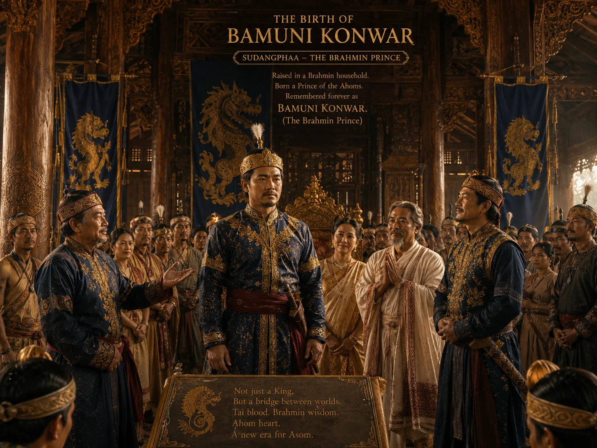

The Reign of Bamuni Konwar
1397–1407 · The coming of Sukaphaa

Sudangphaa rewards his Brahmin foster father and brothers with high court offices, inaugurating Hindu Brahminical influence.
Sources have not yet been catalogued for this record.
People: Sudangphaa (Bamuni Konwar)